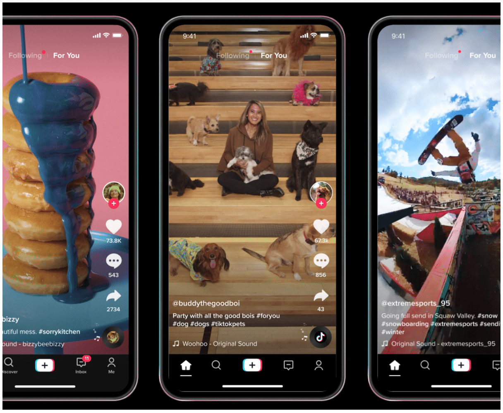

Breaking the Scroll: Unveiling the Mechanics of Endless Content Recommendations
Explore how algorithms on News apps and YouTube curate endless content, leading to mindless internet consumption. Uncover the science behind personalized recommendations, their impact on user behavior, and strategies for mindful digital use.
Read More

Lost in the Podcast Wilderness: The Urgent Need for a Feed-Based Discovery Platform
Navigating the vast podcast landscape can be overwhelming due to a lack of personalized discovery tools. This article explores the need for a feed-based platform to curate content tailored to individual tastes, enhancing the user's listening experience and addressing the current limitations in podcast discovery.
Read More

The Uncharted Terrain: The Absence of a Dedicated Video Content Curation Platform
Navigating the uncharted terrain of video curation, this blog explores the glaring absence of dedicated platforms for curated video content. Discover the untapped potential and compelling need for a solution that revolutionizes the way we discover and consume personalized, high-quality videos.
Read More